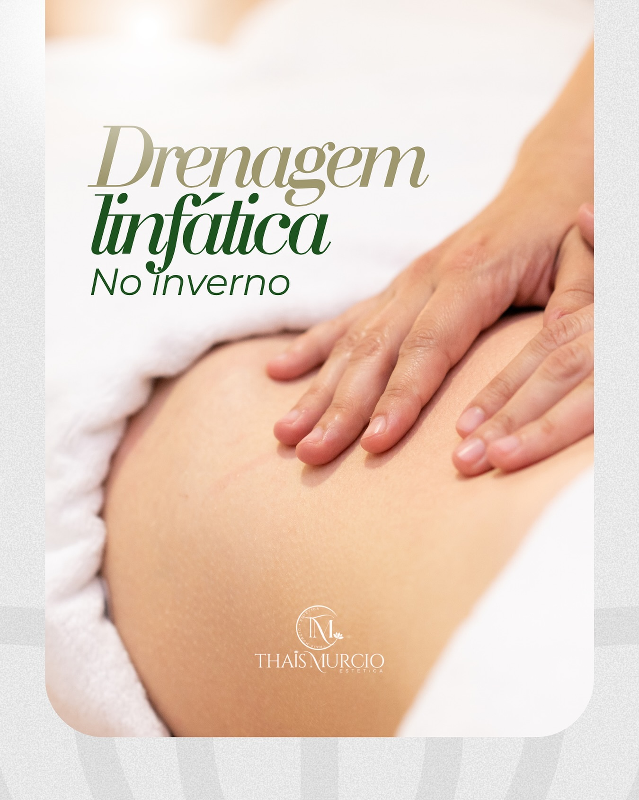
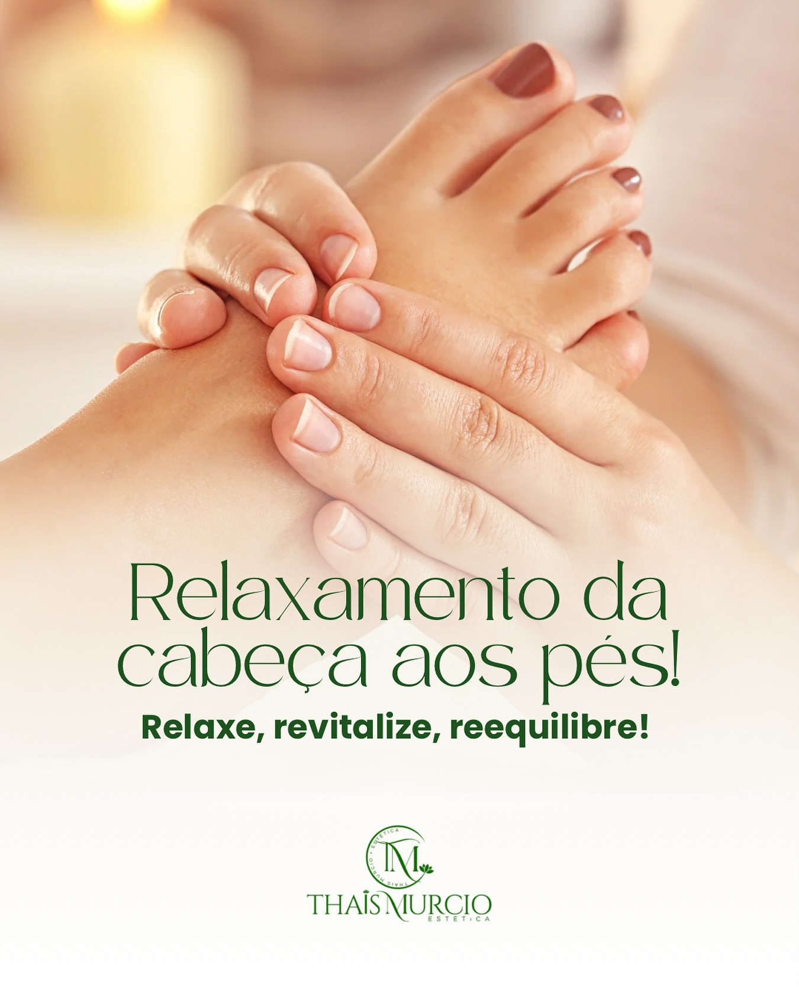
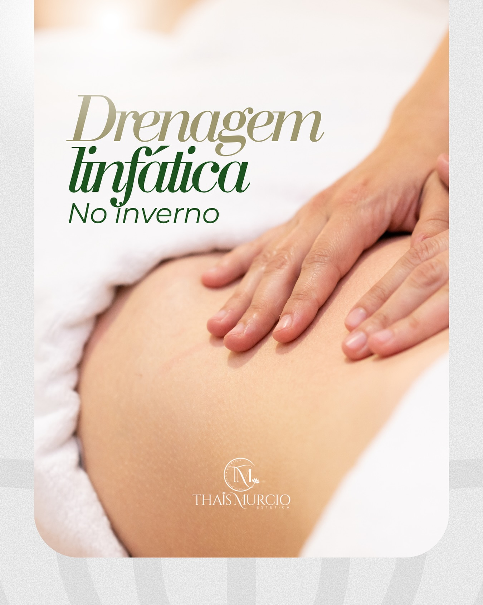
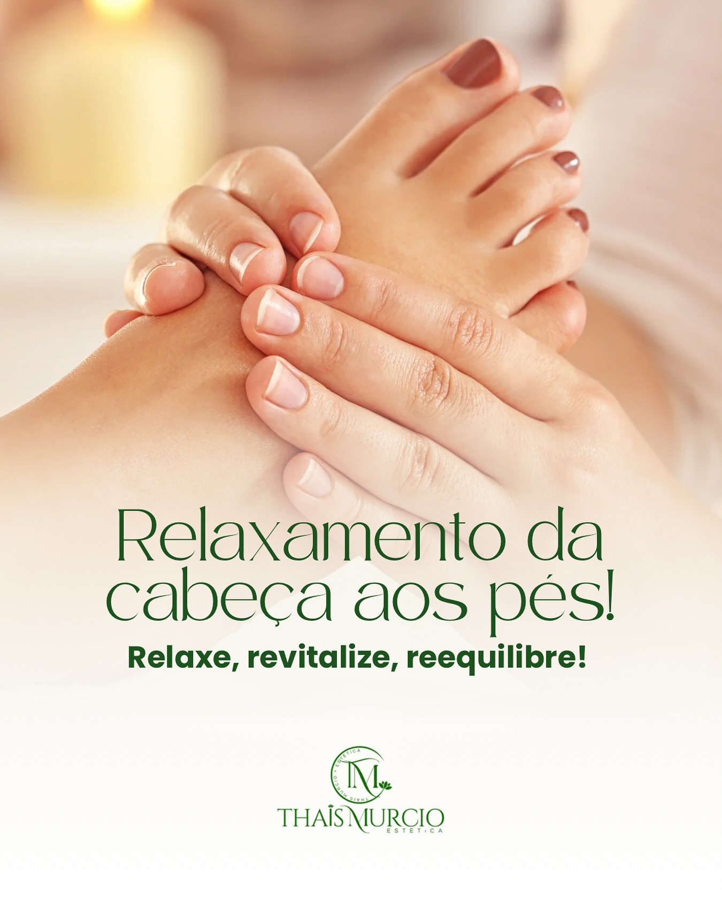
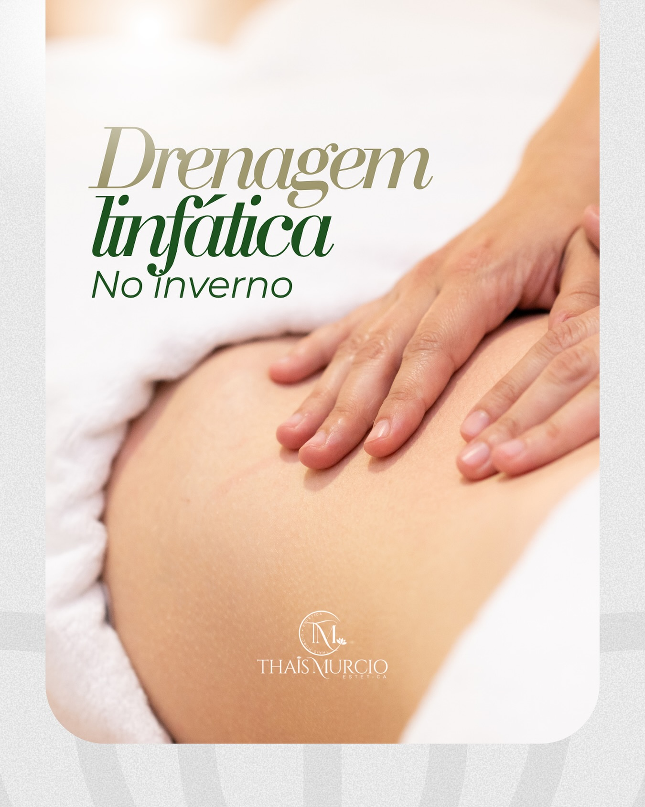
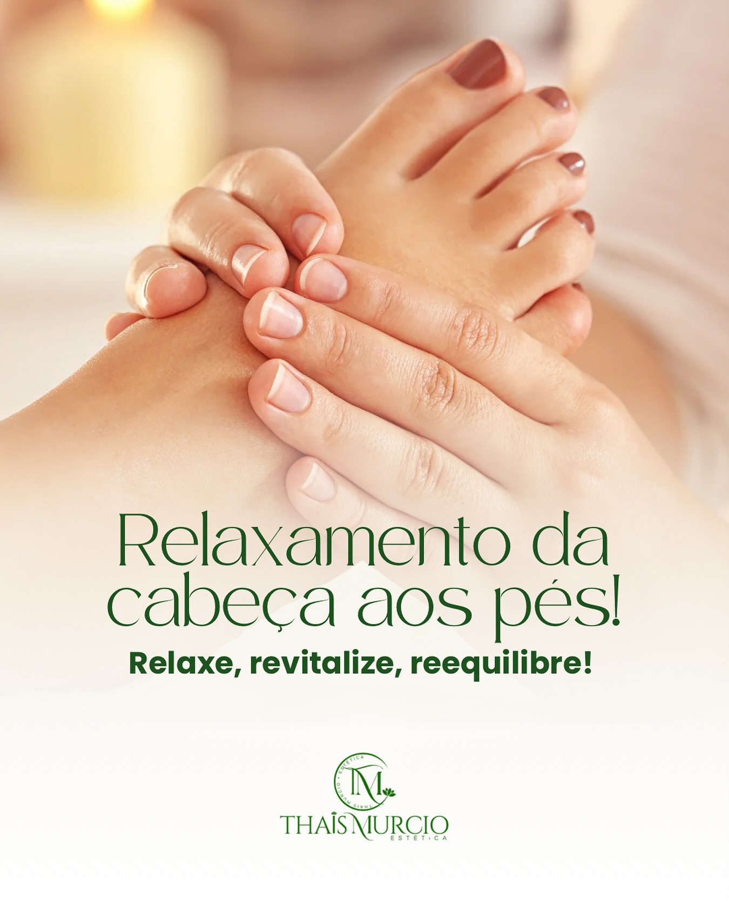

Alívio do estresse e bem-estar físico e mental



A massagem relaxante é uma técnica suave e envolvente que promove alívio das tensões do dia a dia, melhora a circulação e proporciona uma profunda sensação de bem-estar.

• Redução do estresse e ansiedade
• Melhora da qualidade do sono
• Estímulo à circulação sanguínea
• Equilíbrio físico e emocional

Com aromas suaves, iluminação delicada e música relaxante, criamos um espaço perfeito para você esquecer a correria e se reconectar com você mesma.

Atendimento personalizado com técnicas seguras, realizadas por uma profissional experiente e dedicada ao seu bem-estar.